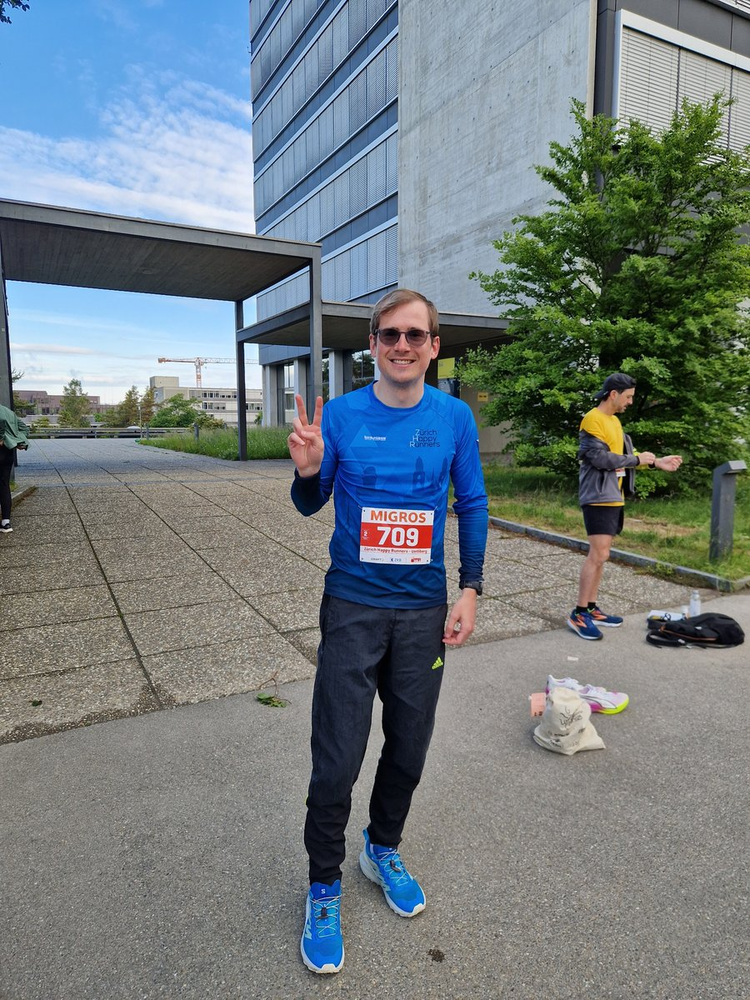

Kurz zu mir
Ich wohne in Zürich. Bis zum 2. September habe ich als externer Software-Entwickler bei der UBS gearbeitet. Mein Projekt wurde offshore verlagert – seither bin ich auf der Suche nach etwas Neuem, das zu mir passt.
Aktuell: ein bisschen am Vibe-Coden
Nebenbei bin ich gerade im Vibe-Coding-Modus unterwegs. Die Idee: mich ein Stück weit „ent-googlen“. Für eine eigene Google-Drive-Kopie hat Claude neulich keine fünf Minuten gebraucht – das fand ich schon ziemlich krass. Genauso faszinierend: wie einfach sich inzwischen eine eigene Foto-App mit Gesichtserkennung bauen lässt, quasi eine eigene Google-Photos-Kopie.
Eigentlich geht die Idee aber weiter, als nur weniger Daten an Google zu senden. Um die Vorteile von KI auch in diesem Dashboard und in Verbindung mit all meinen Daten nutzen zu können, ohne sie einfach bei Claude abzugeben, will ich – sobald mein neuer PC da ist – ein lokales LLM ausprobieren. Mit einer Claude Max 5x-Subscription geht Entwicklung mittlerweile so einfach – die Integration mit zehn unterschiedlichen Services, das Parsen von PDFs oder XML-Files. Ich baue mir gerade ein eigenes, selbst gehostetes, persönliches Dashboard zusammen – ein Überblick über alles, was sonst über zehn verschiedene Apps verteilt wäre:
- Kalender
- Notizen
- Training (Strava, Garmin)
- Finanzen (Portfolio Performance)
- Fotos
- Wetter (MeteoSwiss)
- …
Zugegeben: Es macht ein bisschen süchtig, wie schnell man heute neue Features einfach dazubauen kann. Und Claude ist mittlerweile schon so gut, dass es sogar Konfigurationsfehler in anderen Programmen findet.
Wohin geht's eigentlich mit unserem Beruf?
// insert edgy marketing code block
// Ich habe das Gefühl, dass unsere Industrie gerade im Umbruch ist.
const zukunft = {
frontend: "wird künftig von der KI automatisch passend zur Nutzereingabe generiert",
meinPersoenlichesDashboard: "wird auch irgendwann einfach automatisch generiert",
uebrigBleiben: "werden die AI Agents und die Datenprovider",
java: "wird zum neuen Assembler-Code",
newCodingLanguages: "sind die natürlichen Sprachen wie Deutsch",
};
// Vielleicht liefert das ja ein paar Stichpunkte für eine Diskussion.Und das mit dem Bier…
Ich muss ehrlich zugeben: Ich bin nicht der grösste Bierfan. Aber euer Vibe hat mich angesprochen. Ich persönlich bin mehr der ruhige Typ.
Sport
Vor meiner aktuellen Sportphase hatte ich übrigens eine Brettspielphase. Aktuell bin ich sportlich ziemlich aktiv und will nächstes Jahr den Triathlon in Thun schaffen. Komischerweise trainiere ich in meiner neuen Freizeit gerade sogar etwas weniger – ich bin kürzlich ein paar Marathons mitgelaufen (Fränkische Schweiz, Berlin, als Nächstes hoffentlich München) und schone den Körper deshalb gerade lieber ein bisschen.

Ich würde mich freuen, euch näher kennenlernen zu dürfen.
Die Details stehen in meinem Lebenslauf, den ich euch in der E-Mail mitgesendet habe.
Liebe Grüsse,
Fabian